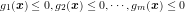
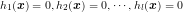
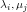
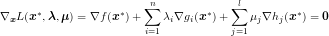
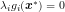
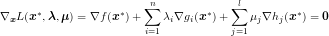
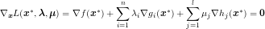

目次
不等式制約条件を持つ関数最適化問題で極小値がとらなければならない条件です。
次元のベクトルに関する最適化問題を考えます。 ただし、次の不等式制約条件を持つものとします。  
この問題を双対な問題に置き換えます。ラグランジュ乗数を導入し、ラグランジュ関数を と定義します。
このとき極小値は次の条件を満たさなければなりません。 
この中で、は相補性条件と言います。
 次元のベクトル
次元のベクトル に関する最適化問題を考えます。
に関する最適化問題を考えます。
 は次の条件を満たさなければなりません。

は次の条件を満たさなければなりません。
